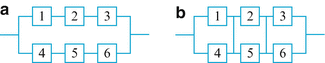

12 Independence#
Independence
AAE35103
\n\n\n\n \n\n\n\n
\n\n\n\n \n\n2
In probability, independence means that knowing something about A, tells me
nothing about B
Dependence means that if I know A happened, B’s probability must also change
Let’s think about some examples first:
Example
Independent
Dependent
Two consecutive tosses of a fair coin
Two consecutive tosses of a biased coin
Four year graduation and SAT scores
Cancer and smoking
Sequential assignment of rooms in a dorm#
\n\n2
In probability, independence means that knowing something about A, tells me
nothing about B
Dependence means that if I know A happened, B’s probability must also change
Let’s think about some examples first:
Example
Independent
Dependent
Two consecutive tosses of a fair coin
Two consecutive tosses of a biased coin
Four year graduation and SAT scores
Cancer and smoking
Sequential assignment of rooms in a dorm#
~ ~ ~ ~ z \n\n3 In probability, independence means that knowing something about A tells us nothing about B. In math, two events, A and B, are independent if Dependence means that if we know A happened, B’s probability must also change. And we use our definition of conditional probability to update P(B): P(A(B)#
P(A) PA P (BIA)= P .P P P(A) P(BIA)#
P(B) ~INDEPENDENCE \n\n4 The definition of conditional probability gives us another convenient way of checking for independence: Two events A and B are independent if and only if P (AnB)#
P(A) . P(B) We can show this by using the multiplication rule P (AnB) = P(AIB) . P(B)#
= P(A) . P(B) /IF AND ONLY If P(AIB) = P(A)) This is equivalent to our definition of INDEPENDENCE . the multiplication properly is satisfied if P(r) = a So , we can add to our definition that A and B are also independent IF EITHER P(A) = O or P(B) = 0 \n\n5 What does that have to do with “disjoint” and “mutually exclusive”? 3 DEPENDENCE AND INDEPENDENCE Definition : When A andB have no outcomes in common , they are said to be disjoint ormutually exclusives events. WRITTEN as Ald = 0 ; ↓ denotes#
·mull’or” EMPTYY event (No Outcomes In that event. \n\n6 a) ZERO OVERLAP S ~ A , B mutually exclusive * A B P(A) > 0 , P(B)(@ HERE P(A/B) =0 P(A) HANCE , BY DEFINITION THESE EVENTS ARE DEPENDENT 6) Complete OVERLAP uS HERE P(AIBL = 1 .0 AB MENCE THEY ARE DEPENDENT BECAUSE THEY DON’T satisfy PlAIBl = YA \n\n7 \n\n8 \n\n9 Consider an experiment consisting of two successive rolls of a 4-sided fair die. Ai = {first roll result in i}, Bj = {second roll result in j}, i = 1,…,4 and j = 1, …,4 Are Ai and Bj independent? 1, 1 1, 2 1, 3 1, 4 2, 1 2, 2 2, 3 2, 4 3, 1 3, 2 3, 3 3, 4 4, 1 4, 2 4, 3 4, 4 x1 x2 S S Ans P(Ai) = 4 16 Al P(Bj) = 4 P(Ai 1 Bj) = 1 15 ↓Ai and Bj are P(Ain3j) = PlAi) . P(Bj)= INDEPENDENT \n\n10 Consider an experiment consisting of two successive rolls of a 4-sided fair die Event A = {first roll is 1}, B = {sum of the two rolls is 5} Are A and B independent? 1, 1 1, 2 1, 3 1, 4 2, 1 2, 2 2, 3 2, 4 3, 1 3, 2 3, 3 3, 4 4, 1 4, 2 4, 3 4, 4 x1 x2#
And PLAND) = t 16 S P1ANB( = P(A) . PLB) = I 16 A AND B are INDEPENDENT \n\n11 You throw two fair 6-sided dice, one green and one red, and observe the numbers. Decide which of the following pairs of events are independent A: the sum is 5 B: the red die shows a 2 \n\n12 You throw two fair 6-sided dice, one green and one red, and observe the numbers. Decide which of the following pairs of events are independent A: the sum is 5 B: the red die is even A = & (1 , 4) , (2, 3) , (3 , 2) , 14 , 113#
Goutcomes B = (1 ., 2) , 1 :, 4) , 1 ., 6) 3 + 5X3
18 outcomes · 141 . 2 , 3 , 4 , 5 , 63 P(A)#
4136 P(A1B) = 2 (1 , 4) , (3 , 2) 36 P(B) = 36 I P(A) . P(B) ↓. INDEPENDENT T \n\n13 Independence of more than two events DEFINITION : Events An , …., An are mutually independent If for every K = 2 , 3, … N and every subset of molices in , is , is …, sk them 9) Ai 1 Az 1 … Aik) = P(A) . P(Aiz) … PlAin) \n\n14 Solar panel array from Example 1.39 from C&D Each cell has a 90% chance of surviving a mission What is the chance that the system in (a) will be fully operational at the end? 7 7 ↳#
S ( sub-system Zell WE WANT TO Find P(SYSTEM FUNCTIONAL) given A i#
EVENT THAT
CELL i
Survive
P(Ai) =
0 . 9
Ai
,
i = 1,
.
.
. ., 6
MUTUALLY
independent
\n\n\n\n \n\n15
\n\n15
↑(Op String Functional) = P((A-1A21Az))#
P(A1) . P(Az) . P(Az)#
0 . 9 =.729 P (BOTTOM) = P(TOP) = 0 . 729 4 3 6 /AND P (SYSTEM FUNCTIONAL) = P) BOTNTOr)#
P(rot)
P(top) + RHOP BOT) = 0 . 93
0 . 93
+
0 .93
-0
.927
\n\n16
Solar panel array from Example 1.39 from C&D
Each cell has a 90% chance of surviving a mission
What is the chance that the system in (b) will be fully operational at
the end?
\n\n\n\n \n\n17
P(SYS
FUNCTIONAL) = P)(AUAn)n(AAs)n/A]#
\n\n17
P(SYS
FUNCTIONAL) = P)(AUAn)n(AAs)n/A]#
COL . 1 ed. 2 P (A1UAu)#
P(A1)
P(Ay)
P(AnnA4)
Independente#
P(A1)
P(A4)
P(1) .P(Ay) = 0 . e
0 . 9#
0 . 92 = 991, D(A + UAy) = P(AzUAs) = P(A3UAs) = 0 . 99 EVENTS (A1VAy) , CAL , As) , (As , As) are Independent . P (sys . Forc.) = (0 . 9) . 10 . 9) . (0 . 9)#
0 .993 = 0 .97#
\n\n18 Computer simulation provides us an effective way to estimate probabilities of very complicated events o Modern system problem can be too difficult to address analytically o Simulations help predict and quantify impact of uncertainty on system behavior and performance How to introduce uncertainty in computer simulations? o Random number generators § Most software packages have a random number generator § MATLAB à ‘rand’ generates a random number between 0 and 1 random number from amiform distribution (0 , 1) interval \n\n19 Let’s repeat the solar panel array example 1.39 from C&D part (b), but this time use MATLAB Each cell has a 90% chance of surviving a mission What is the chance that the system in (b) will be fully operational at the end? => MATLAB script on next slides: SolarArray.m \n\n\n\n

\n\n20clear variables; close all; clc;
nTests=100000; cellReliability=0.9; nSurvived=0;
for ii=1:nTests
A1=rand<cellReliability; A2=rand<cellReliability; A3=rand<cellReliability; A4=rand<cellReliability; A5=rand<cellReliability; A6=rand<cellReliability; arraySurvives=testCellArray(A1,A2,A3,A4,A5,A6); if arraySurvives nSurvived=nSurvived+1; end end ParraySurvives=nSurvived/nTests % probability of system surviving function arraySurvives=testCellArray(A1,A2,A3,A4,A5,A6)
col1Survives=(A1 || A4); col2Survives=(A2 || A5); col3Survives=(A3 || A6); arraySurvives=(col1Survives && col2Survives && col3Survives); end %function arraySurvives -number of runs RAND#
EACH CELL HAS A DIFERENT RELIABILITY Guest survivenacity \n\n21 ParraySurvives = 0.9702 Running SolarArray.m in MATLAB will print the following to the Command Window: Running again gives: And again: ParraySurvives = 0.9697 ParraySurvives = 0.9708 v EACH RUN WILL SHOW A Reset ~ v \n\nReading 22 Chapter 1.5 & 1.6 of Carlton and Devore, Probability with Applications in Engineering, Science, and Technology, 2nd ed., 2017 \n\n